- 2025/6/27
- 《厚生労働省》
第２回化学物質管理強調月間スローガン募集を始めました。ご応募はこちらから
- 2025/2/13
- 《厚生労働省》
「化学物質の自律的管理～ビルメンテナンス・清掃業界、外食業界及びホテル・旅館業等第三次産業における洗剤等による事故の防止に向けて～」の開催について
> 開催レポートを公開しました
- 2024/2/14
- 《厚生労働省》
令和５年度「職場における化学物質規制の理解促進のための意見交換会」 （リスクコミュニケーション）の開催について
（各回リーフレットはこちら→大阪会場：令和6年2月27日（火）、東京会場：令和6年3月4日（月））。
お申込みはこちらの入力フォームをご利用ください。
- 2024/2/1
- 化学物質管理をサポートする「ケミガイド」を公開いたしました。
労働安全衛生法の政省令改正により令和6年４月から化学物質管理が変わります。
今回の労働安全衛生法令の改正で、
規制対象物が、危険有害性が確認されている物質全て※に拡大されます。
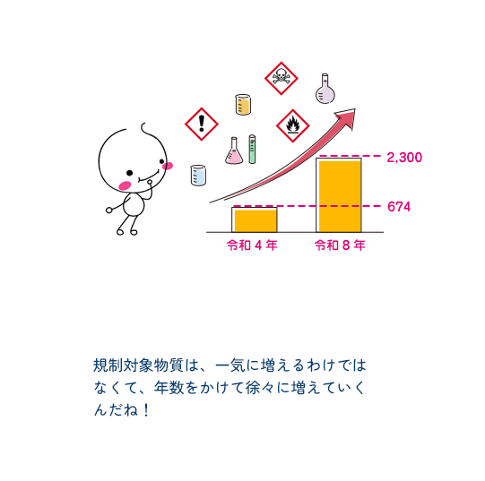
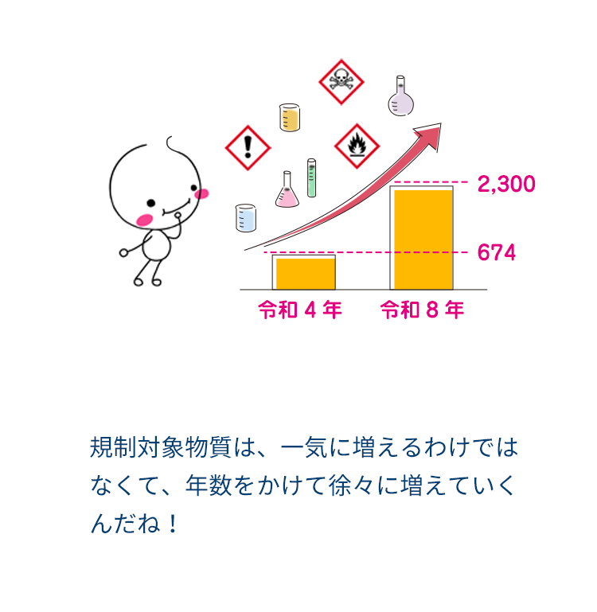
まずは身近な製品のラベルをチェック
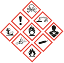
こんなふうに赤枠で囲まれたGHSのマークがラベルに表示されている製品は、危険性・有害性があるので取り扱いに注意しましょう。
そして、法律に従った管理が必要なリスクアセスメント対象物が含まれているかどうか、SDS（安全データシート）を確認してみましょう。
こんな災害がおこっています
普段意識せずに職場で使っている商品や製品に含まれる化学物質によって、
さまざまな労働災害が報告されています。
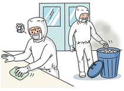
使用済み廃棄衣類から揮発した有機溶剤による中毒トルエン等を含有するシンナーを染み込ませたガーゼで部品を払しょくしたが、そのガーゼを付近のごみ箱に密閉することなく廃棄。有機溶剤の匂いを感じたまま作業を継続していたところ、頭痛や吐き気等の症状を訴える。
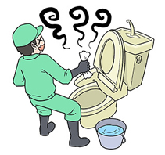
換気をせずにトイレの清掃作業中、洗浄剤を使用しフッ化水素中毒となり入院換気の不十分なトイレ清掃作業中、洗浄剤（フッ化水素含有）を使用して作業をしていたところ、咳、発熱、関節痛、倦怠感等が現れ、ふらつき等の症状が激しくなったため病院へ。「フッ化水素中毒」と診断された。
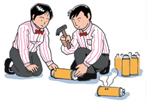
使用済みガスボンベの廃棄作業中に火災が発生カセットコンロ用の使用済みガスボンベ（ブタンガス使用）を廃棄するために穴を開ける作業中に発生その火により火傷を負った。
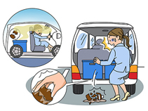
薬品が付着した破損した容器に保護具なしで触れたことによるフェノールによる薬傷商品を納品時に、ガラス瓶を駐車場に落下、割れたガラス瓶を素手で拾い、しばらくすると商品に触れた指が赤く腫れ、気分も悪くなり救急車で病院に搬送された。
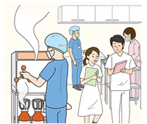
医療用器具等の滅菌処理中のガス中毒滅菌器から滅菌ガスが漏れ、クリニック準備室内で診察開始前の準備をしていた作業者が目の痛み等を訴え、3名が嘔吐し、ガス中毒となった。
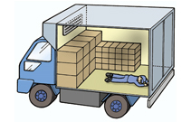
ドライアイスの輸送作業中、酸素欠乏となる扉が開かなくなってしまい外に出られなくなった際に、ドライアイスから発生した二酸化炭素ガスのため庫内が酸欠状態となり意識を失いかけた。
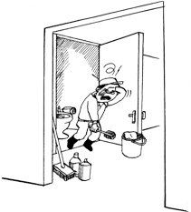
飲食店のトイレを清掃中、洗浄剤を混合し塩素ガスが発生し中毒トイレの清掃をするため備付けの塩素系漂白剤を床にまき、その上に酸性洗剤をまいて水をかけ、清掃を始めたところ、涙を流しながら咳き込み始め、苦しそうにしたため、病院へ連れて行ったところ「塩素ガス中毒」と診断され、1週間入院した。
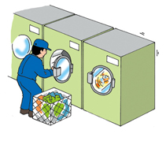
ドライクリーニングの洗浄用溶剤に静電気による火花が引火し火傷クリーニング工場でドライクリーニング洗濯機を稼動中に石油系溶剤に洗濯機で発生した静電気による火花が引火し、火災が発生、労働者3名が火傷を負った
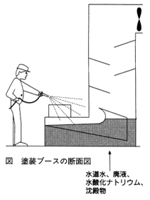
塗装工場の清掃時における水酸化ナトリウムによる皮膚障害塗装工場における上塗ブースの槽内において、槽内の沈殿物を取り除く作業をしていた作業者が槽内の水酸化ナトリウムが溶解している水溶液を浴び、化学熱傷を負った。
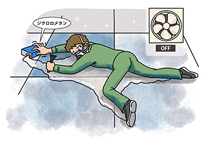
床カーペット接着剤用剥離剤に含まれていたジクロロメタンによる中毒及び薬傷建物内の一室において、床のタイルカーペットの張替え工事を特定化学物質であるジクロロメタンを80%含有する剥離剤を使用していたところ、現場責任者が同作業員が倒れているのを発見し、病院に搬送された。
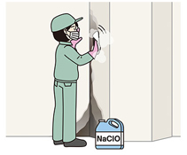
カビ取り用洗剤を使用した作業による次亜塩素酸ナトリウム中毒次亜塩素酸ナトリウムを含有するカビ取り用洗剤を汚れの落ちが悪いため、通常500倍に希釈して作業するところ、洗剤を希釈せずに原液のまま使用し、息苦しい等の症状が発生したため病院を受診したところ、次亜塩素酸ナトリウム中毒と診断された。
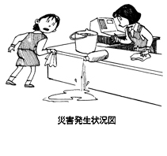
レジカウンター上の粘着テープの跡を拭きとる際、有機溶剤を用い中毒レジカウンター上の粘着テープの跡を洗浄液で拭き落とす作業中、洗浄液の瓶を転倒させ床にこぼしたが、雑巾で拭きとり、レジカウンターの下のごみ箱に捨てたまま作業を続けた所、頭痛、吐き気の症状を訴え、病院で有機溶剤中毒と診断された。
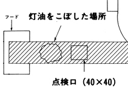
厨房内での灯油による急性中毒厨房の排気設備清掃作業中、灯油を入れた缶を倒し、ダクト内に流入したが、そのまま作業を続け、嘔吐等の症状が現れ、緊急搬送されたところ急性薬物中毒と診断された。
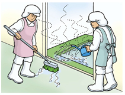
学校の厨房の清掃中に塩素ガス中毒厨房床面を洗浄するため、漂白剤と水酸化ナトリウムを主成分とする厨房機器・設備用洗剤を混入させ、厨房に撒き洗浄したところ、ふらつきがひどく、病院に診察を受けたところ塩素ガス中毒と診断。
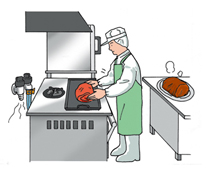
小売店で食肉を焼いていたところ、プロパンガスが爆発し火傷を負うガスレンジ上方の換気扇を稼動し、ガスの元栓を開け、ガスレンジのバルブも開けて携帯用点火器により点火したところ、爆発が起こり、作業者は１か月の入院を要した。
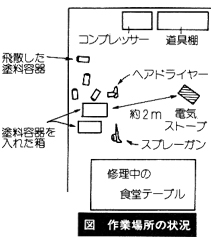
家具の修理作業中における爆発災害食堂テーブルのひび割れの修理の際、吹付けと塗装を始めたところ、突然作業場所近くの床面で爆発が発生し、付近にいた作業者2名が火傷を負った。
動力噴霧機のタンクに殺虫剤を入れて散布の準備をしていたところ、散布ノズルから殺虫剤が噴出殺虫剤を噴霧器に入れて、散布ノズルのホースを解いている際、散布ノズルの流量調節レバーが開き、顔面に殺虫剤が噴射され、薬物中毒と診断された。
もっと見る
と思った方に詳しくご案内します
ケミサポのご紹介
化学物質の労働災害を防ぐために、
法律に従って自分たちで自律的に化学物質の管理を進める手順を「ケミサポ」で、
「4つのステップ」にわけて説明しています。
-
ケミサポトップ
-
自律的な管理を進めるための4つのステップ
- 1-1
こんな製品や化学物質を使っていませんか？
- 1-3
リスクアセスメント対象物に該当するか確認
- 2-1
化学物質管理者の選任
-
なぜ変わるの？
-
どう変わるの？
- オレンジの項目は特に注目のページです。
無料相談窓口
職場における化学物質管理については、
「無料相談窓口」でもお気軽にご相談ください。
- ラベル表示
- 安全データシート（SDS）
- 化学物質のリスクアセスメント
- 令和4年（2022年）に改正された労働安全衛生関係法令に基づく新たな化学物質規制の内容
動画で知る
youtubeのサイトに移動します。
※受講者が単独で本動画の視聴では、上記告示に基づく講習を受講したことにはなりませんので、ご留意ください。
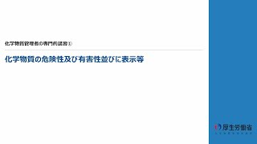
①化学物質の危険性及び有害性並びに表示等
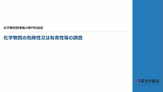
②化学物質の危険性又は有害性等の調査
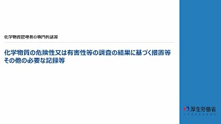
③化学物質の危険性又は有害性等の調査の結果に基づく措置等その他の必要な記録等
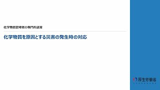
④化学物質を原因とする災害の発生時の対応
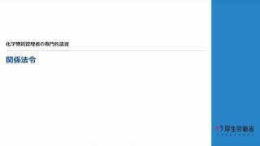
⑤関係法令
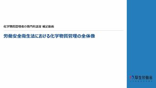
①ワンポイント動画①_労働安全衛生法における化学物質管理の全体像
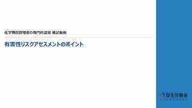
②ワンポイント動画②_有害性リスクアセスメントのポイント
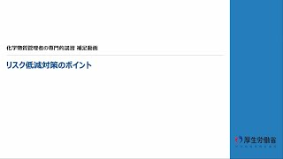
③ワンポイント動画③_リスク低減対策のポイント
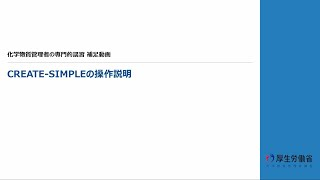
④ワンポイント動画④_CREATE-SIMPLEの操作説明
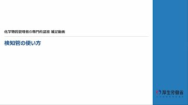
⑤ワンポイント動画⑤_検知管の使い方
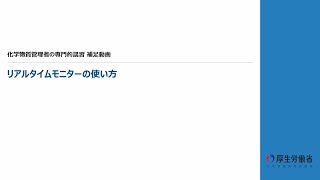
⑥ワンポイント動画⑥_リアルタイムモニターの使い方
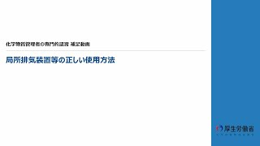
⑦ワンポイント動画⑦_局所排気装置の正しい使用方法
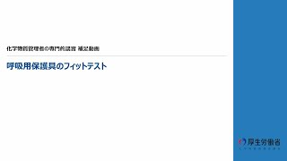
⑧ワンポイント動画⑧_呼吸用保護具のフィットテスト
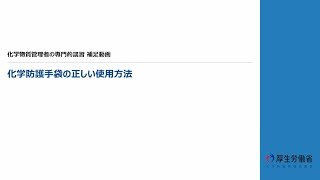
⑨ワンポイント動画⑨_化学防護手袋の正しい使用方法
資料で知る
化学物質管理リーフレット
共通教材
- 日本語［PDF形式：19,308KB］
- 英語［PDF形式：20,975KB］
- 中国語［PDF形式：20,945KB］
- ベトナム語［PDF形式：20,848KB］
- タガログ語［PDF形式：20,926KB］
- クメール語［PDF形式：20,912KB］
- インドネシア語［PDF形式：21,068KB］
- タイ語［PDF形式：20,901KB］
- ミャンマー語［PDF形式：25,442KB］
- ネパール語［PDF形式：20,890KB］
- モンゴル語［PDF形式：20,871KB］
化学物質取扱い（基礎）
- 日本語［PDF形式：9,093KB］
- 英語［PDF形式：8,813KB］
- 中国語［PDF形式：8,845KB］
- ベトナム語［PDF形式：8,803KB］
- タガログ語［PDF形式：8,812KB
- クメール語［PDF形式：8,893KB］
- インドネシア語［PDF形式：8,806KB］
- タイ語［PDF形式：8,861KB］
- ミャンマー語［PDF形式：8,850KB］
- ネパール語［PDF形式：8,837KB］
- モンゴル語［PDF形式：8,810KB
- スペイン語[PDF形式：8,812KB]
- ポルトガル語[PDF形式：8,819KB]
- 韓国語[PDF形式：8,769KB]
化学物質取扱い（管理）
- 日本語［PDF形式：22,170KB］
- 英語［PDF形式：21,347KB］
- 中国語［PDF形式：21,404KB］
- ベトナム語［PDF形式：21,344KB］
- タガログ語［PDF形式：21,346KB
- クメール語［PDF形式：21,393KB］
- インドネシア語［PDF形式：21,330KB］
- タイ語［PDF形式：21,369KB］
- ミャンマー語［PDF形式：21,391KB］
- ネパール語［PDF形式：21,336KB］
- モンゴル語［PDF形式：21,343KB
- スペイン語[PDF形式：21,344KB]
- ポルトガル語[PDF形式：21,305KB]
- 韓国語[PDF形式：21,311KB]
ビルクリーニング業
- 日本語［PDF形式：17,255KB］
- 英語［PDF形式：16,742KB］
- 中国語［PDF形式：16,757KB］
- ベトナム語［PDF形式：16,676KB］
- タガログ語［PDF形式：16,704KB］
- クメール語［PDF形式：16,719KB］
- インドネシア語［PDF形式：16,708KB］
- タイ語［PDF形式：16,693KB］
- ミャンマー語［PDF形式：20,254KB］
- ネパール語［PDF形式：16,686KB］
- モンゴル語［PDF形式：16,665KB］
飲食料品製造業
- 日本語［PDF形式：13,418KB］
- 英語［PDF形式：14,026KB］
- 中国語［PDF形式：14,048KB］
- ベトナム語［PDF形式：13,950KB］
- タガログ語［PDF形式：14,003KB］
- クメール語［PDF形式：14,009KB］
- インドネシア語［PDF形式：14,001KB］
- タイ語［PDF形式：13,983KB］
- ミャンマー語［PDF形式：16,633KB］
- ネパール語［PDF形式：13,979KB］
- モンゴル語［PDF形式：13,951KB］
外食業
- 日本語［PDF形式：14,670KB］
- 英語［PDF形式：14,916KB］
- 中国語［PDF形式：14,925KB］
- ベトナム語［PDF形式：14,859KB］
- タガログ語［PDF形式：14,896KB］
- クメール語［PDF形式：14,911KB］
- インドネシア語［PDF形式：14,895KB］
- タイ語［PDF形式：14,877KB］
- ミャンマー語［PDF形式：21,845KB］
- ネパール語［PDF形式：14,872KB］
- モンゴル語［PDF形式：14,859KB］
塗装
- 日本語［PDF形式：26,313KB］
- 英語［PDF形式：26,045KB］
- 中国語［PDF形式：26,111KB］
- ベトナム語［PDF形式：26,041KB］
- タガログ語［PDF形式：26,032KB
- クメール語［PDF形式：26,062KB］
- インドネシア語［PDF形式：26,038KB］
- タイ語［PDF形式：26,054KB］
- ミャンマー語［PDF形式：26,071KB］
- ネパール語［PDF形式：26,034KB］
- モンゴル語［PDF形式：26,035KB
- スペイン語[PDF形式：26,046KB]
- ポルトガル語[PDF形式：16,607KB]
- 韓国語[PDF形式：26,039KB]
めっき
- 日本語［PDF形式：24,978KB］
- 英語［PDF形式：24,731KB］
- 中国語［PDF形式：24,787KB］
- ベトナム語［PDF形式：24,731KB］
- タガログ語［PDF形式：24,716KB
- クメール語［PDF形式：24,745KB］
- インドネシア語［PDF形式：24,715KB］
- タイ語［PDF形式：24,742KB］
- ミャンマー語［PDF形式：24,756KB］
- ネパール語［PDF形式：24,723KB］
- モンゴル語［PDF形式：16,314KB
- スペイン語[PDF形式：24,732KB]
- ポルトガル語[PDF形式：24,720KB]
- 韓国語[PDF形式：24,728KB]